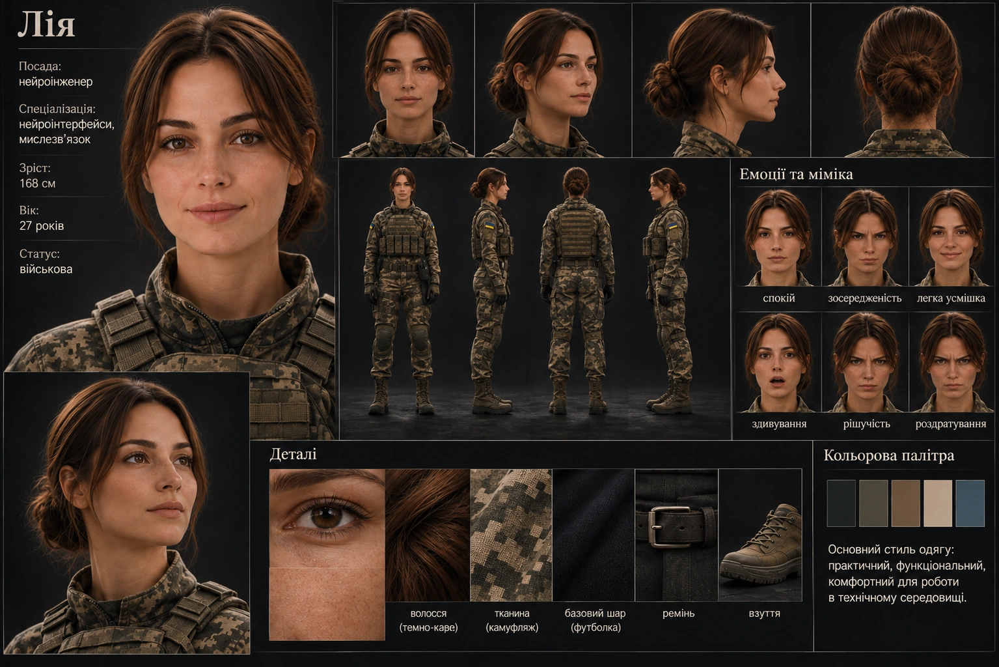

PROFILE
Military neuroengineer
Leia is a military neuroengineer specialising in neural interfaces and thought-link systems. The updated visual dossier identifies her status as military. A detailed biography and specific story episodes under this name require separate confirmation from the manuscripts.
Name: Leia
Position: Neuroengineer
Specialisation: Neural interfaces, thought-link systems
Status: Military
Age: 27 (from the supplied visual dossier)
Height: 168 cm (from the supplied visual dossier)
APPEARANCE AND STYLE
Visual canon
According to the updated dossier, Leia has dark chestnut hair tied back and brown eyes. She wears camouflage military fatigues, tactical equipment and military boots.
The character sheet shows her face from several angles, full-body views, key expressions and clothing details. These visual characteristics are taken from the supplied image.
PROFESSIONAL SPECIALISATION
Neural interfaces and thought-link systems
The available information establishes Leia's professional field but does not describe specific developments, projects, technical achievements or work assignments. Those details remain open until supported by the manuscript.
Details not yet established
Callsign, country of origin, blood type, personality, dominant hand, family, personal relationships and specific story events are not confirmed by the supplied materials.